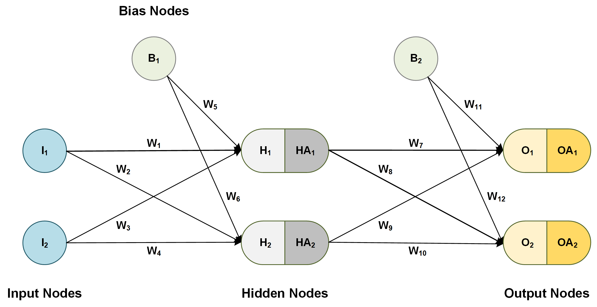
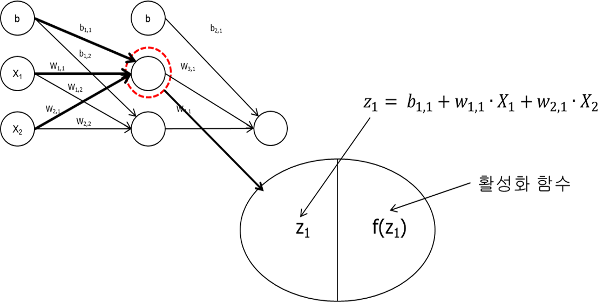
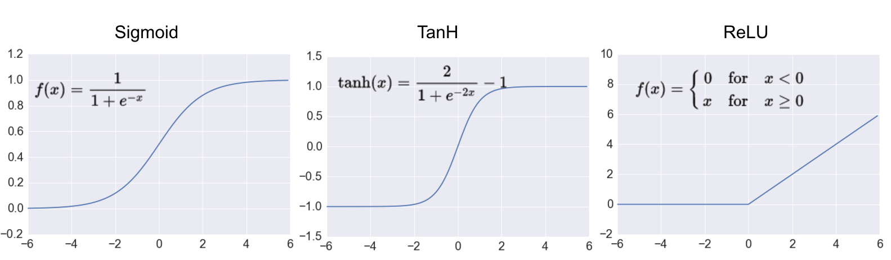
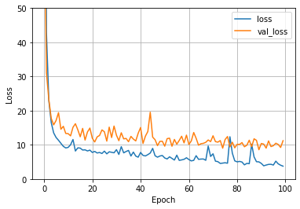

Deep Learning 기초
Table of contents
*Deep Learning: ML 연구방법 중 하나로, Neural Network를 활용하는 방식.
*python으로 Deep Learning을 할 때 사용할 수 있는 framework:
- Tensorflow: Google에서 개발
- Keras: tensorflow를 기반으로 만든, 보다 쉬운 framework
- 입문자용으로 적합. 전문 연구자가 아니고 본인 필드에 가볍게 응용하는 정도면 Keras로 충분
- TensorFlow v1.10.0부터 tf.keras로 텐서플로우 안에서 케라스를 사용
- PyTorch: Facebook에서 개발
인공신경망 이론
Neural network의 구조
※ layer의 수를 셀 때, 보통 hidden layer와 output layer 수로 표현. (input layer는 0번째 층으로 간주)
→ L = 3이면 hidden layer 2개에 output layer 1개인 구조
※ 각 layer에 포함된 node들을 neuron이라고도 함 (인공 뉴런)

(출처: dzone.com)
1. Input layer
: 입력층. 가장 앞에 있는 레이어로, 독립변수를 데이터로 받는다.
- 독립변수(feature)의 수만큼의 input node로 구성 (각 node는 각 독립변수의 값을 입력받음)
- ex) 두 개의 독립변수(평수, 연식)을 통해 아파트 가격을 예측할 경우, input node는 2개
2. Hidden layer
: 은닉층. 추가적인 작업을 통해 종속변수의 정확한 예측에 기여하는 node들을 뽑아낸다.
- 앞 layer에 존재하는 정보들 중 종속변수 예측에 중요한 정보들을 추출해주는 역할을 한다.
- hidden layer는 1개 이상 존재할 수 있다. (연구자가 결정하는 것)
- hidden layer가 너무 많아도 오히려 성능이 떨어지기에, 보통 1-3개 사이 중에서 고르는 듯?
- 보통 hidden layer 수가 많은 경우를 ‘deep neural networks’ = ‘deep learning’이라고 부르는 것.
- hidden layer의 node 개수도 연구자 재량에 따라 결정.
- 첫번째 hidden layer의 node 수와 두번째 hidden layer의 node 수가 같지 않아도 됨. 하지만 보통은 그 전 layer의 node 수와 같거나 적은 수를 사용한다고 함
- hidden layer의 node 수는 보통 input layer의 node 수와 output layer의 node 수 사이로 많이 설정
3. Output layer
: 출력층. 종속변수에 대한 예측치가 출력되는 레이어.
- 종속변수의 형태에 따라 output node 수가 달라짐
- 이분적 분류 문제: output node를 2개로 하거나 / 1개로 두고, 시그모이드 함수를 output layer의 활성 함수로 사용해 0에 가까운지 1에 가까운지를 가지고 판단
- 다중 분류 문제: 결과변수(DV)가 취할 수 있는 값 (카테고리의 수) = output node의 수
- 회귀 문제: output node는 1개. (예측치 = output node)
+) Bias Node
- bias node = intercept (상수항)의 개념 (선형회귀에서의 intercept의 기능과 같다)
- input layer와 hidden layer에만 bias node가 하나씩 들어갈 수 있으며, bias node가 들어가면 모델의 flexibility가 증가한다.
+) Weights (Parameters)
- 독립변수와 종속변수 간의 관계를 설정 (선형회귀에서의 theta값과 동일한 기능)
- node와 node를 잇는 각 선마다 별도의 weight가 존재.
- ex) 1번째 layer의 모든 node와 2번째 layer의 모든 node 간에는 별도의 weight가 존재
가설함수와 손실함수
- 가설함수: 주어진 가중치(weight)와 편향(bias)에 따라 output layer 뉴런들의 출력을 계산해내는 함수.
- 손실함수(비용함수):
- 회귀 문제: 보통 MSE(평균제곱오차)를 많이 사용
- 분류 문제: 보통 로그 손실(cross entropy)를 많이 사용
→ 경사하강법을 사용해서 손실함수의 최소점을 찾는다. (손실함수를 최소화하는 weight 값들을 구한다)
+) 다양한 경사 하강법
- 배치 경사 하강법 (batch gradient descent):
- 한 번 경사 하강을 할 때 모든 학습 데이터를 사용 → 데이터가 많으면 너무 오래 걸린다!
- 확률적 경사 하강법 (stochastic gradient descent):
- 한 번 경사 하강을 할 때 하나의 학습 데이터만 사용 → 빠르게 계산이 가능하지만, 가장 경사가 가파른 방향으로 하강하지 않으며 극소점 근처에서도 계속 주변을 맴돌며 쉽게 수렴하지 않을 수 있다는 단점도 있음
- 미니 배치 경사 하강법 (mini batch gradient descent):
- 위 두가지 방법의 타협점. 데이터셋을 임의로 같은 크기의 여러 데이터셋으로 나눠준 후, 한 번 경사 하강을 할 때 ‘mini batch’ 학습 데이터를 사용 (ex. 학습 데이터를 50개씩 나눠 놓은 후, 한 번의 경사하강에 하나의 mini batch만 사용)
※ 가장 좋은 경사 하강법이 정해져 있는 건 아니지만, 대부분의 경우 미니 배치 경사 하강법을 가장 많이 사용한다
활성 함수
※ hidden & output node들은 보통 입력값 z (이전 층에서 전달하는 입력값)을 그대로 출력하지 않고, 활성화 함수로 변환해 f(z)를 출력한다. (각 node 안에서 이러한 변환이 이루어짐)

1. Hidden Layer의 활성 함수
 (출처: adilmoujahid.com)
- 시그모이드 함수( = logistic function)
- $ \frac{1}{(1 + e^{-z})} $로 계산. input을 0~1 사이의 숫자로 바꿔서 출력해주게 됨
- Hyperbolic tangent (tanh)
- $ \frac{sinh(z)}{cosh(z)} = \frac{(e^z - e^{-z})}{(e^z + e^{-z})} $로 계산. input을 -1 ~ 1 사이의 값으로 바꿔서 출력해줌
- ReLU (Rectified Linear Unit)
-
max(0, z)로 계산. input이 0보다 크면 그대로 출력, 0보다 작거나 같으면 0을 출력. - 경사 계산 속도가 매우 빠르다는 장점. (z가 0보다 크면 경사가 1, 작거나 같으면 0)
-
- Leaky ReLU
- ReLU를 약간 변형한 형태로, 사라지는 기울기 문제가 덜해진다.
-
max(εz, z)로 계산. ε(입실론)은 보통 0.01 정도의 작은 상수를 사용
※ 최근에는 hidden layer의 활성 함수로 ReLU가 가장 많이 사용된다.
※ 활성화 함수가 비선형이면 신경망도 비선형 함수, 활성화 함수가 선형이면 신경망도 결국 선형 함수 (선형적인 결정경계만 찾아낼 수 있음) → 은닉층의 활성 함수로는 선형 함수를 사용하지 않는다!
2. Output Layer의 활성 함수
- 분류문제 (DV가 분류문제)
- 이분적 분류 문제라면 보통 output layer의 활성함수로 ‘시그모이드 함수’를 사용.
- output node를 1개만 두고, 0에 가까운지 1에 가까운지의 ‘확률’에 따라 분류
- 다중 분류 문제라면 보통 ‘Softmax 함수’를 사용.
- $ \frac{e^z}{각 node의 e^z의 합} $으로 계산 (e는 자연상수. 2.71…) → 그리고 가장 값이 큰 쪽으로 분류
- ※ Softmax 함수는 늘 출력값의 합이 1이 되기에, 다중 분류에서 보다 확률적으로 의미가 명확하다 (ex. 강아지일 확률 70%)
- 이분적 분류 문제라면 보통 output layer의 활성함수로 ‘시그모이드 함수’를 사용.
- 회귀문제 (DV가 연속변수): output layer의 활성함수로 ‘선형함수’를 사용. output node를 1개만 두고, output node가 받는 z값을 그대로 출력. (output layer에 활성함수가 없다고 이해해도 무방)
Keras로 구현하기 (기초)
- 먼저, 설치해야 사용이 가능하다: https://www.tensorflow.org/install/pip#virtual-environment-install
- google colaboratory에서는 별도의 설치 없이 바로 import해서 사용 가능
import tensorflow as tf # google colab에서는 설치 따로 안해도 import해서 사용 가능
from tensorflow import keras
from tensorflow.keras import layers
from tensorflow.keras.layers.experimental import preprocessing
import numpy as np
import pandas as pd
import matplotlib.pyplot as plt
# Make numpy printouts easier to read.
np.set_printoptions(precision=2, suppress=True)
- precision=2: 소수점 두번째 자리까지만 출력
- suppress=True: e-04와 같은 scientific notation을 제거
데이터 준비
- 기초 예시이기에, 기본으로 제공되는 boston_housing 데이터를 사용
from tensorflow.keras.datasets import boston_housing
(X_train, y_train), (X_test, y_test) = boston_housing.load_data() # test_split=0.2이 default.
Downloading data from https://storage.googleapis.com/tensorflow/tf-keras-datasets/boston_housing.npz
57344/57026 [==============================] - 0s 0us/step
print(X_train.shape, y_train.shape, X_test.shape, y_test.shape) ## train:test가 대략 4:1 비율로 나뉘었고, IV는 13개, DV는 1개
(404, 13) (404,) (102, 13) (102,)
Normalizer 준비
- preprocessing을 위한 normalization layer를 준비해서 모델에 넣게 됨
normalizer = preprocessing.Normalization()
normalizer.adapt(np.array(X_train))
# 아래와 같이 normalizer에 13개 IV 각각의 평균(mean)과 분산(variance) 정보가 저장됨
print(normalizer.mean.numpy())
print(normalizer.variance.numpy())
[ 3.75 11.48 11.1 0.06 0.56 6.27 69.01 3.74 9.44 405.9
18.48 354.78 12.74]
[ 85.18 563.51 46.28 0.06 0.01 0.5 778.75 4.11
75.47 27611.97 4.83 8834.99 52.5 ]
## 예시로, 데이터를 넣었을 때 잘 normalize되는지 확인
ex_array = np.array(X_train[:1]) # X_train의 첫번째 값 (첫번째 도시에 대한 13개 정보 vector)
print('Original:', ex_array)
print('Normalized:', normalizer(ex_array).numpy()) # 원래 서로 다른 scale의 값이였지만 잘 normalize된 것을 확인 가능!
Original: [[ 1.23 0. 8.14 0. 0.54 6.14 91.7 3.98 4. 307.
21. 396.9 18.72]]
Normalized: [[-0.27 -0.48 -0.44 -0.26 -0.17 -0.18 0.81 0.12 -0.63 -0.6 1.15 0.45
0.83]]
모델 형성
model = keras.Sequential([
normalizer,
layers.Dense(64, activation='relu', input_shape=(X_train.shape[1],)), # hidden layer 1
layers.Dense(32, activation='relu'), # hidden layer 2
layers.Dense(1) # output layer: 회귀 문제이므로 node 1개 & 활성 함수 지정 X
])
model.summary()
Model: "sequential"
_________________________________________________________________
Layer (type) Output Shape Param #
=================================================================
normalization (Normalization (None, 13) 27
_________________________________________________________________
dense_6 (Dense) (None, 64) 896
_________________________________________________________________
dense_7 (Dense) (None, 32) 2080
_________________________________________________________________
dense_8 (Dense) (None, 1) 33
=================================================================
Total params: 3,036
Trainable params: 3,009
Non-trainable params: 27
_________________________________________________________________
*Prameter 수 계산:
- 첫번째 normalization layer는 13*2 + 1 = 27
- 두번째: 14 * 64 = 896 (bias node가 하나씩 추가되니까 13이 아니라 14)
- 세번째: 65 * 32 = 2080
- 마지막: 33 * 1 = 33
model.compile(loss=keras.losses.MeanSquaredError(), optimizer=tf.optimizers.Adam(0.01))
- 손실함수: 보통 ‘mean_absolute_error’나 keras.losses.MeanSquaredError() 사용
- optimizer로 어떤 경사 하강법을 사용할지 결정. 보통 Adam(Adaptive Moment Estimation)을 많이 사용
- Adam(0.01): learning_rate를 0.01로 지정한 것. (default = 0.001)
- Adam 경사하강법은 파라미터에 따라 learning rate를 자동으로 조절해주는 기능이 있으나, 초기 learning rate는 설정을 해줘야 함
학습 & 평가
%%time
history = model.fit(
X_train, y_train,
validation_split = 0.2, # 20%의 trainig data를 validation data로 사용 -- 사실 이미 train_test_split을 해뒀기 때문에 꼭 할 필요는 없다.
epochs=100, # 전체 데이터를 몇 번 반복해서 업데이트할 것인지
batch_size = 16, # 한 번 업데이트할 때 데이터포인트를 몇 개 사용할지
verbose=0 # 학습 과정을 아래에 출력하지 않겠다는 의미
)
CPU times: user 10.2 s, sys: 432 ms, total: 10.6 s
Wall time: 9.49 s
- batch_size: default는 32. 보통 2의 배수를 많이 사용하는 듯.
- verbose: 0, 1, 2 중 하나 선택. 0 = silent, 1 = progress bar, 2 = one line per epoch
+) batch_size와 epoch:
- ex) 학습 데이터가 48개 있고, batch_size=16, epochs=100이라면, 총 (48/16) * 100 = 300번 업데이트가 일어남
- 48개의 데이터를 16개씩 쪼개서 3번 나눠서 업데이트를 해주는데, 이렇게 전체 데이터를 업데이트하는 과정을 100번 반복하는 것!
def plot_loss(history):
plt.plot(history.history['loss'], label='loss') ## 실제 training에 사용했던 data에서 어느 정도 오차가 발생하는지
plt.plot(history.history['val_loss'], label='val_loss') ## validation data로 사용했던 20%에서 어느 정도 오차가 발생하는지
plt.ylim([0, 50])
plt.xlabel('Epoch')
plt.ylabel('Loss')
plt.legend()
plt.grid(True)
plot_loss(history)

# test data로 예측했을 때의 손실 확인
model.evaluate(X_test, y_test)
4/4 [==============================] - 0s 2ms/step - loss: 13.1361
13.136137008666992
from sklearn.metrics import r2_score
y_test_pred = model.predict(X_test)
r2_score(y_test, y_test_pred) # r스퀘어값 확인
0.8421969063118736